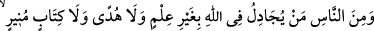
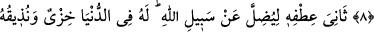
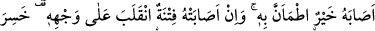
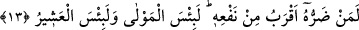

ALLAH KULLARINA
HAKSIZLIK EDİCİ DEĞİLDİR
8. İnsanlardan bazısı, bir bilgisi, bir rehberi ve (vahye dayanan) aydınlatıcı bir
kitaba dayanmaksızın, Allah hakkında tartışır.
9. Allah yolundan saptırmak için yanını eğip bükerek (kibir ve azamet içinde)
Allah hakkında tartışmaya kalkar. Onun için dünyada bir rezillik vardır; kıyâmet
gününde ise ona yakıcı azabı tattıracağız.
10. İşte bu, önceden yapıp ettiklerin yüzündendir (denilir). Elbette Allah
kullarına haksızlık edici değildir.
11. İnsanlardan kimi Allah’a yalnız bir yönden kulluk eder. Şöyle ki: Kendisine bir
iyilik dokunursa buna pek memnun olur, bir de musibete uğrarsa çehresi değişir
(dinden yüz çevirir). O, dünyasını da, ahiretini de kaybetmiştir. İşte bu, apaçık
ziyanın ta kendisidir.
12. O, Allah’ı bırakıp, kendisine ne faydası, ne de zararı dokunacak olan şeylere
yalvarır. Bu, (haktan) büsbütün uzak olan sapıklığın ta kendisidir.
13. O, zararı faydasından daha yakın olan bir varlığa yalvarır. O (yalvardığı), ne
kötü bir yardımcı, ne kötü bir dosttur!
“İnsanlardan bazısı,” zarûrî veya bedîhî-fıtrî “bir bilgisi, bir rehberi”
ma’rifete/bilgiye götüren sahih bir düşünce ve istidlâli; Kâşifî’nin belirttiğine göre
maksada yol gösteren bir delili “ve (vahye dayanan) aydınlatıcı bir kitaba” hakkı
ortaya çıkaran bir vahye; Kâşifî’nin belirttiğine göre doğruyu yanlıştan ayıran apaçık bir
kitaba “dayanmaksızın, Allah hakkında tartışır.” Yâni zarûrî bir mukaddimeye, nazarî